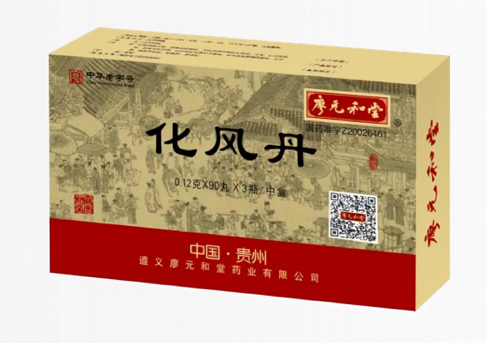
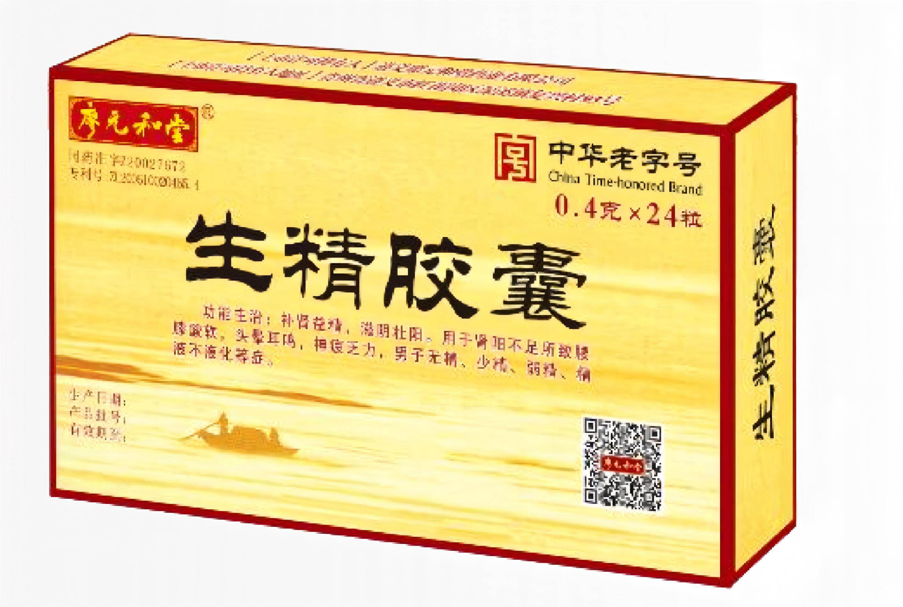

以现代科技赋能经典名方，造福中国万千百姓。

适应症：用于风痰闭阻、中风偏瘫、癫痫、面神经麻痹，口眼歪斜。[cite: 701]
核心壁垒：目前治疗脑卒中临床用药中唯一不是以“活血化瘀”作为治疗机制的药物，其药母发酵工艺为全国独家。[cite: 706]
独家组方：
药母：紫苏叶、荆芥、僵蚕、全蝎。[cite: 703] 辅以：天南星(制)、苍术、雄黄、硼砂、巴豆霜、天麻、人工麝香、冰片、檀香、朱砂。[cite: 704, 705]

适应症：补肾益精，滋阴壮阳。用于肾阳不足所致腰膝酸软，头晕耳鸣，神疲乏力，男子无精、少精、弱精，精液不液化等症。[cite: 832]
市场与疗效：成方于70年代，2005年获国家发明专利。稳居专科领域榜首，是《男性不育症中西医结合多学科诊疗指南(2023版)》等共识推荐用药。[cite: 839, 853]
独特组方：
鹿茸、枸杞子、人参、冬虫夏草、菟丝子、沙苑子、淫羊藿、黄精、何首乌、桑椹、补骨脂、骨碎补、仙茅、金樱子等。[cite: 834, 835, 836]